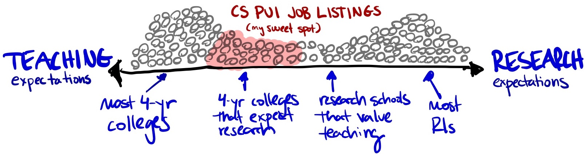

Post a Job Ad

While we often post positions quickly after they are publicized, departments can also add their own advertisements to the site. Make sure your department and university aligns with the website criteria. See the criteria for more information.
Ways to Post
There are two ways to post your ad:
- You can add your information by editing our Github repository (and eventually creating a pull request), as described below. This is our preferred method for users who are comfortable navigating GitHub and editing plaintext files.
- You can submit your posting via a Google Form. We will add then add your posting to the site, typically within a few days.
💡 You can email Phil Chodrow (pchodrow@middlebury.edu) if you run into any problems or need help.
It’s polite to close your ad after your search has officially concluded.
Required Content
Each job posting includes several required metadata fields, as well as a brief description of the position.
Required Metadata Fields
The following information is required for every job posting, whether submitted on GitHub or via Google Forms. If submitted via GitHub, you are responsible for populating these fields in the YAML frontmatter of your job posting. If submitted via Google Forms, you will be prompted to provide this information as part of the form.
- Institution: the name of your institution.
- Location: the city and country of your institution.
- Deadline: the date by which applications should be received. If the deadline is soft/rolling, please provide an approximate date or the day on which review of applications will begin.
- Active: whether the position is still open.
- Type: the type of position: tenure track, visiting, or adjunct.
- URL: a link to the official job posting.
Guidelines for Job Descriptions
We encourage you to heavily abbreviate the official job description in order to minimize boilerplate and convey as many concrete, salient facts about the position as possible. We especially encourage you to communicate considerations like:
- Teaching load
- Availability of startup funds
- Availability of sabbaticals, especially pre-tenure sabbaticals
- Desired research areas, of applicable
- Desired seniority level, of applicable
We strongly encourage all job descriptions to be one paragraph, followed by a single line describing the review process and date.
Posting on GitHub
Following these instructions requires an account on GitHub.com. If you don’t already have one, the best approach is probably to use the Google Form.
There is no risk of messing up our site by following this workflow, even if you make an error. We’ll fix it with no harm done!
To post on GitHub, follow the steps below. The accompanying images illustrate several stages of this process; you can click on each one to enlarge.
{kind=link}
{kind=link}
{kind=link}
- Navigate to the
jobsfolder of thecs-puirepository on GitHub, linked here. - Click the “Add file” button and select “Create new file”.
- Fork the project, as described.
- Name your file with the following format:
YYYY-Institution-Name-Optional-Detail.qmd(e.g.2025-My-College-Theory.qmd), filling in the name of your institution as well as the year, month, and day of the closing of the position. “Optional details” most often means a specialty area sought, but other uses are ok. Note that the file extension must be.qmd(for Quarto Markdown), not the more-familiar.mdextension for markdown documents. - Copy and paste the Example Post Template into your new file.
- Hovering over on the upper right of the code block will reveal a clipboard icon. You can click this icon to instantly copy the code.
- Replace the placeholder metadata and text with the actual information for your posting.
- It is especially important to replace
https://cs-pui.github.io/in theurlfield with the link to your full job ad!
- It is especially important to replace
- Click the green “Commit changes” button, which creates a new branch in your fork of the repository.
- Click the button to start a pull request.
That’s it! One of the site maintainers will review your pull request, make any required formatting changes, and merge it onto the site shortly.
Example Post Template
---
institution: Example College
location: Example City, Example Country
deadline: 2024-10-01
active: true
type: Tenure Track
url: https://cs-pui.github.io/
---
St. agur blue cheese edam **mascarpone**. Port-salut stinking bishop when the
cheese comes out everybody's happy cut the cheese cheddar paneer cheddar feta.
Queso blue castello queso gouda smelly cheese chalk and cheese cottage cheese
cheese on toast. Cheese slices pepper jack cheese on toast cheese and biscuits.
**Mascarpone** blue castello *cheeseburger*. St. agur blue cheese st. agur blue
cheese cheeseburger bavarian bergkase cheesy feet squirty cheese who moved my
cheese jarlsberg. Cheese and biscuits danish fontina pepper jack blue castello
camembert de normandie emmental airedale airedale. Who moved my cheese st. agur
blue cheese.
<br> <br>
🗓️ Review of applications begins ***October 1st, 2024*** and will continue
until the position is filled. Formatting Requirements
Please attend to three small pieces of formatting, which are all illustrated in the code block above:
- Please separate the line describing the deadline and deadline approach from the main description using two consecutive
<br>tags. - Please ensure that the 🗓️ icon appears at the beginning of this line.
- Please ensure that the deadline itself is surrounded by triple
***on both sides, like this:***October 1st, 2024***. This will render as a highlight: October 1st, 2024.- Please also check that the date you describe in this line matches the deadline in the metadata.
Closing Your Ad
After your search has officially concluded, please close your ad. To do so, you can again work either through GitHub or through email.
- On Github, please navigate to the
*.qmdfile for your job posting. Change theactivefield fromtruetofalse. Please again commit your changes to a new branch. We’ll merge in your changes to close the job. - You can also email Phil Chodrow (
pchodrow@middlebury.edu) with a request to close your ad. Make sure to clearly identify which ad is yours, especially if your institution has made multiple postings this job season.